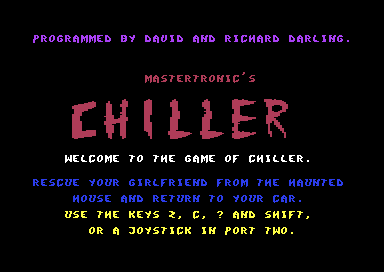
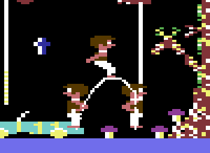

<meta charset="utf-8">
<meta name="viewport" content="width=device-width, initial-scale=1">
<title>{{title}}</title>
<link rel="preconnect" href="https://fonts.googleapis.com">
<link rel="stylesheet" href="https://fonts.googleapis.com/css2?family=Lato:wght@400;700;900&family=IBM+Plex+Mono:wght@400;500&display=swap">
<link rel="stylesheet" href="reference/chiller-page.css">
<!-- tabs -->
<header class="hero">
  <p class="eyebrow">{{platform}} · {{year}} · {{publisher}}</p>
  <h1>{{title}}</h1>
  <p class="sub">The joystick and the keys, how the boy jumps from ledge to ledge, and why a fall never hurts him.</p>
</header>
<main class="wrap">
<section id="keys">
  <p class="fig">Controls</p>
  <h2 class="t">Joystick or keyboard</h2>
  <p class="lede">As the title screen says, there are two ways to play: a joystick in control port 2, or the keys Z, C, ?, and SHIFT. The game reads the joystick port itself, and leaves the keyboard to the Commodore's built-in routines.</p>
  <figure style="margin:0 0 24px"><figcaption class="cap">The title screen.</figcaption></figure>
  <table class="t">
    <tr><th>Joystick; keyboard</th><th>Read as</th><th>Does</th></tr>
    <tr><td>Stick (port 2) left, right; Z, C</td><td><code>$DC00</code> bits 2, 3; key codes <code>$0C</code>, <code>$14</code> in <code>$C5</code></td><td>walk</td></tr>
    <tr><td>Stick up; SHIFT</td><td><code>$DC00</code> bit 0; the shift flag <code>$028D</code></td><td>jump</td></tr>
    <tr><td>Fire; <code>?</code></td><td><code>$DC00</code> bit 4; key code <code>$37</code></td><td>switch players, way back only</td></tr>
    <tr><td>SPACE</td><td>key code <code>$3C</code>, listed twice as up</td><td>nothing: up is off on every screen</td></tr>
  </table>
  <p>The key table (<code>$4512</code>) is part of each screen's settings, so every screen could have had its own keys. All ten have the same.</p>
</section>
<section id="jump">
  <p class="fig">The jump</p>
  <h2 class="t">Jump to go up, fall as far as you like</h2>
  <p class="lede">The jump is 24 one-pixel steps up, each a little slower than the last, and the same steps back down in reverse. However far the boy falls afterwards, he lands unhurt.</p>
  <div class="plate">
    
    <p class="cap">One jump up and to the right in the forest, drawn by the game's own routines at three times the C64's pixels, with a dot for each frame at his feet. He rises 24 pixels in 24 frames, hangs at the top while the slowest steps run, and lands 28 pixels to the right 70 frames, or 1.4 seconds, after he took off.</p>
  </div>
  <p>Up on the stick, or SHIFT, starts a jump (<code>start_jump</code>, <code>$5418</code>) unless the boy is already falling. In the air the game switches the controls off by writing an <code>RTS</code> over the first byte of <code>read_controls</code> (<code>$C84D</code>), so he keeps the direction he took off in until he lands.</p>
  <p>Jumping is the only way up. All ten screens switch off up and down as walking directions (<code>$4500</code>-<code>$4503</code>), so the boy has no climb of his own and gets up the screen one jump at a time, from ledge to ledge.</p>
  <p>Some ledges crumble. Tiles <code>$4D</code>-<code>$53</code> are one ledge in seven stages. Every eighth step on it moves the ledge on a stage, and the last stage is empty space (<code>tile_touch_a</code>, <code>$5A9A</code>). Stand on a crumbling ledge too long and it drops you.</p>
  <p>A fall was once meant to hurt. The game counts how far the boy falls and compares the count with a limit when he lands, but the branch after that test has been overwritten with <code>NOP</code>s, and the limit is <code>$FF</code> anyway (<code>land</code>, <code>$53EF</code>; the limit at <code>$457A</code>).</p>
</section>
</main>
<script src="../../lib/c64.js"></script>
<script src="../../lib/sid.js"></script>
<script src="reference/chiller-page.js"></script>
